Scaling from Zero to Millions of Users
TL;DR (added) — Building a system that supports millions of users is iterative. Start with one server, then split tiers, add a load balancer, replicate the database, add a cache and CDN, make the web tier stateless, go multi-region, decouple with message queues, and finally shard the database. Each step solves a specific bottleneck — adopt them in order, not all at once.
📖 In this chapter¶
- Single server setup
- Database
- Which databases to use?
- Vertical scaling vs horizontal scaling
- Load balancer
- Database replication
- Cache
- Cache tier
- Considerations for using cache
- Content delivery network (CDN)
- Considerations of using a CDN
- Stateless web tier
- Stateful architecture
- Stateless architecture
- Data centers
- Message queue
- Logging, metrics, automation
- Database scaling
- Millions of users and beyond
- ⭐ Amplification — Pitfalls and decision tree (added)
Designing a system that supports millions of users is challenging, and it is a journey that requires continuous refinement and endless improvement. In this chapter, we build a system that supports a single user and gradually scale it up to serve millions of users. After reading this chapter, you will master a handful of techniques that will help you to crack the system design interview questions.
Single server setup¶
A journey of a thousand miles begins with a single step, and building a complex system is no different. To start with something simple, everything is running on a single server. Figure 1 shows the illustration of a single server setup where everything is running on one server: web app, database, cache, etc.
Figure 1 — Single server (web + DB + cache on one box)¶
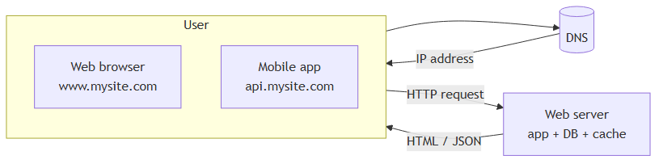
To understand this setup, it is helpful to investigate the request flow and traffic source. Let us first look at the request flow (Figure 2).
Figure 2 — Request flow with DNS resolution¶
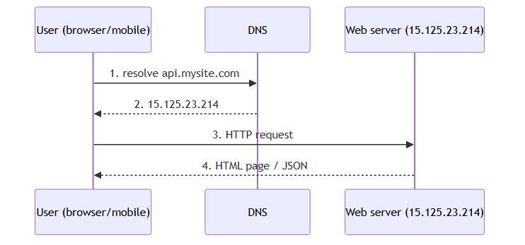
-
Users access websites through domain names, such as
api.mysite.com. Usually, the Domain Name System (DNS) is a paid service provided by 3rd parties and not hosted by our servers. -
Internet Protocol (IP) address is returned to the browser or mobile app. In the example, IP address
15.125.23.214is returned. -
Once the IP address is obtained, Hypertext Transfer Protocol (HTTP) [1] requests are sent directly to your web server.
-
The web server returns HTML pages or JSON response for rendering.
Next, let us examine the traffic source. The traffic to your web server comes from two sources: web application and mobile application.
-
Web application: it uses a combination of server-side languages (Java, Python, etc.) to handle business logic, storage, etc., and client-side languages (HTML and JavaScript) for presentation.
-
Mobile application: HTTP protocol is the communication protocol between the mobile app and the web server. JavaScript Object Notation (JSON) is commonly used API response format to transfer data due to its simplicity. An example of the API response in JSON format is shown below:
GET /users/12 – Retrieve user object for id = 12
{
"id": 12,
"firstName": "John",
"lastName": "Smith",
"address": {
"streetAddress": "21 2nd Street",
"city": "New York",
"state": "NY",
"postalCode": 10021
},
"phoneNumbers": [
"212 555-1234",
"646 555-4567"
]
}
⭐ Amplification — what’s actually happening behind the scenes¶
- DNS lookup is itself cached at multiple layers (browser → OS → recursive resolver → authoritative). A “fresh” lookup can take 20–120ms; a cached one is sub-ms. TTL on the DNS record controls how long resolvers keep it.
- HTTPS adds a TLS handshake on top of step 3 (~1 extra round trip with TLS 1.3, ~2 with TLS 1.2). For mobile users on 4G, that’s another 50–200ms.
- Single-server box runs everything: nginx/Apache for HTTP, your runtime (Node/Java/Python), MySQL or Postgres, and Redis/Memcached — all sharing CPU, RAM, and disk. The first thing to break is usually disk I/O on the DB.
- Single-server is fine up to a few thousand req/min for typical CRUD apps. Don’t over-architect before you have the traffic.
Database¶
With the growth of the user base, one server is not enough, and we need multiple servers: one for web/mobile traffic, the other for the database (Figure 3). Separating web/mobile traffic (web tier) and database (data tier) servers allows them to be scaled independently.
Figure 3 — Web tier and data tier separated¶
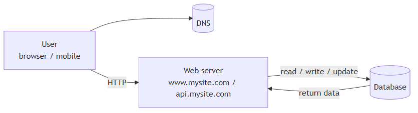
Which databases to use?¶
You can choose between a traditional relational database and a non-relational database. Let us examine their differences.
Relational databases are also called a relational database management system (RDBMS) or SQL database. The most popular ones are MySQL, Oracle database, PostgreSQL, etc. Relational databases represent and store data in tables and rows. You can perform join operations using SQL across different database tables.
Non-Relational databases are also called NoSQL databases. Popular ones are CouchDB, Neo4j, Cassandra, HBase, Amazon DynamoDB, etc. [2]. These databases are grouped into four categories: key-value stores, graph stores, column stores, and document stores. Join operations are generally not supported in non-relational databases.
For most developers, relational databases are the best option because they have been around for over 40 years and historically, they have worked well. However, if relational databases are not suitable for your specific use cases, it is critical to explore beyond relational databases. Non-relational databases might be the right choice if:
- Your application requires super-low latency.
- Your data are unstructured, or you do not have any relational data.
- You only need to serialize and deserialize data (JSON, XML, YAML, etc.).
- You need to store a massive amount of data.
⭐ Amplification — RDBMS vs NoSQL side-by-side¶
Dimension Relational (SQL) Non-Relational (NoSQL) Examples MySQL, Postgres, Oracle, SQL Server DynamoDB, Cassandra, MongoDB, Neo4j, Redis Data model Tables with strict schema Key-value / document / column-family / graph Joins ✅ Native, powerful ❌ Generally not supported Schema Rigid (migrations needed) Flexible / schema-less Transactions ACID, multi-row, multi-table Often only single-row, eventual consistency Scaling Mostly vertical; horizontal is hard Horizontal scaling is a first-class feature Best for Complex queries, financial data, well-known relational domain Massive scale, simple lookups, unstructured data, ultra-low latency The four NoSQL families:
Family Example Best at Key-value Redis, DynamoDB Sessions, caches, simple lookups by ID Document MongoDB, Couchbase JSON-like records, flexible schemas Column-family Cassandra, HBase Time-series, very large write loads Graph Neo4j, Neptune Highly connected data (social, fraud, recommendations) 💡 Default to relational. Reach for NoSQL only when the workload genuinely demands it.
Vertical scaling vs horizontal scaling¶
Vertical scaling, referred to as “scale up”, means the process of adding more power (CPU, RAM, etc.) to your servers. Horizontal scaling, referred to as “scale-out”, allows you to scale by adding more servers into your pool of resources.
When traffic is low, vertical scaling is a great option, and the simplicity of vertical scaling is its main advantage. Unfortunately, it comes with serious limitations.
- Vertical scaling has a hard limit. It is impossible to add unlimited CPU and memory to a single server.
- Vertical scaling does not have failover and redundancy. If one server goes down, the website/app goes down with it completely.
Horizontal scaling is more desirable for large scale applications due to the limitations of vertical scaling.
In the previous design, users are connected to the web server directly. Users will unable to access the website if the web server is offline. In another scenario, if many users access the web server simultaneously and it reaches the web server’s load limit, users generally experience slower response or fail to connect to the server. A load balancer is the best technique to address these problems.
⭐ Amplification — vertical vs horizontal cheat sheet¶
Vertical (scale up) Horizontal (scale out) How Bigger box (more CPU/RAM/disk) Add more boxes Ceiling Hard hardware limit Effectively unbounded Failover ❌ Single point of failure ✅ Redundancy built in Cost curve Exponential at the high end Roughly linear Complexity Simple — same code, bigger machine Needs LB, stateless tier, distributed coordination Best when Low/medium traffic, hard-to-distribute workloads (e.g. RDBMS) Web-tier traffic, anything stateless
Load balancer¶
A load balancer evenly distributes incoming traffic among web servers that are defined in a load-balanced set. Figure 4 shows how a load balancer works.
Figure 4 — Load balancer fronting two web servers¶
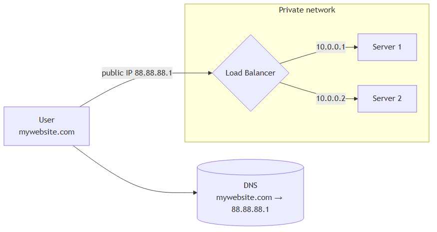
As shown in Figure 4, users connect to the public IP of the load balancer directly. With this setup, web servers are unreachable directly by clients anymore. For better security, private IPs are used for communication between servers. A private IP is an IP address reachable only between servers in the same network; however, it is unreachable over the internet. The load balancer communicates with web servers through private IPs.
In Figure 4, after a load balancer and a second web server are added, we successfully solved no failover issue and improved the availability of the web tier. Details are explained below:
-
If server 1 goes offline, all the traffic will be routed to server 2. This prevents the website from going offline. We will also add a new healthy web server to the server pool to balance the load.
-
If the website traffic grows rapidly, and two servers are not enough to handle the traffic, the load balancer can handle this problem gracefully. You only need to add more servers to the web server pool, and the load balancer automatically starts to send requests to them.
Now the web tier looks good, what about the data tier? The current design has one database, so it does not support failover and redundancy. Database replication is a common technique to address those problems. Let us take a look.
⭐ Amplification — load balancer flavors and algorithms¶
Layer 4 vs Layer 7: - L4 (transport, TCP/UDP) — fast, decides based on IP/port only. Examples: AWS NLB, HAProxy in TCP mode. - L7 (application, HTTP) — sees URLs, headers, cookies. Can route
/api/*differently from/static/*. Examples: AWS ALB, nginx, Envoy.Routing algorithms:
Algorithm How it picks Use when Round-robin Next server in line Servers are identical Weighted round-robin Round-robin with weights Mixed instance sizes Least connections Fewest active connections Long-lived connections (websockets) IP hash Hash of client IP → server Need stickiness without cookies Least response time Fastest historically Latency-sensitive apps Health checks — every modern LB pings each server (
/healthendpoint typically). A box that fails N consecutive checks is removed from rotation. This is what makes failover automatic.
Database replication¶
Quoted from Wikipedia: “Database replication can be used in many database management systems, usually with a master/slave relationship between the original (master) and the copies (slaves)” [3].
A master database generally only supports write operations. A slave database gets copies of the data from the master database and only supports read operations. All the data-modifying commands like insert, delete, or update must be sent to the master database. Most applications require a much higher ratio of reads to writes; thus, the number of slave databases in a system is usually larger than the number of master databases. Figure 5 shows a master database with multiple slave databases.
Figure 5 — Master/slave replication¶
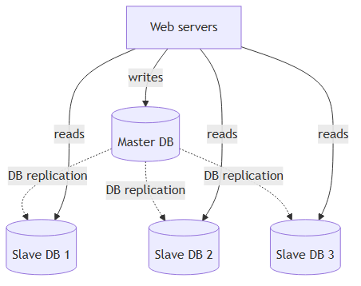
Advantages of database replication:
-
Better performance: In the master-slave model, all writes and updates happen in master nodes; whereas, read operations are distributed across slave nodes. This model improves performance because it allows more queries to be processed in parallel.
-
Reliability: If one of your database servers is destroyed by a natural disaster, such as a typhoon or an earthquake, data is still preserved. You do not need to worry about data loss because data is replicated across multiple locations.
-
High availability: By replicating data across different locations, your website remains in operation even if a database is offline as you can access data stored in another database server.
In the previous section, we discussed how a load balancer helped to improve system availability. We ask the same question here: what if one of the databases goes offline? The architectural design discussed in Figure 5 can handle this case:
-
If only one slave database is available and it goes offline, read operations will be directed to the master database temporarily. As soon as the issue is found, a new slave database will replace the old one. In case multiple slave databases are available, read operations are redirected to other healthy slave databases. A new database server will replace the old one.
-
If the master database goes offline, a slave database will be promoted to be the new master. All the database operations will be temporarily executed on the new master database. A new slave database will replace the old one for data replication immediately. In production systems, promoting a new master is more complicated as the data in a slave database might not be up to date. The missing data needs to be updated by running data recovery scripts. Although some other replication methods like multi-masters and circular replication could help, those setups are more complicated; and their discussions are beyond the scope of this course. Interested readers should refer to the listed reference materials [4] [5].
Figure 6 shows the system design after adding the load balancer and database replication.
Figure 6 — Full architecture so far (LB + master/slave)¶
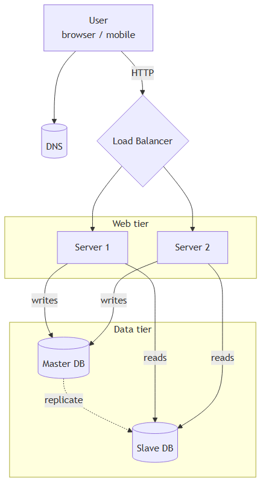
Let us take a look at the design:
- A user gets the IP address of the load balancer from DNS.
- A user connects the load balancer with this IP address.
- The HTTP request is routed to either Server 1 or Server 2.
- A web server reads user data from a slave database.
- A web server routes any data-modifying operations to the master database. This includes write, update, and delete operations.
Now, you have a solid understanding of the web and data tiers, it is time to improve the load/response time. This can be done by adding a cache layer and shifting static content (JavaScript/CSS/image/video files) to the content delivery network (CDN).
⭐ Amplification — replication modes and gotchas¶
Replication mode trade-offs:
Mode How writes work Pro Con Async (default in MySQL) Master commits, then ships to slaves Fast writes Slaves can lag; promoted slave can lose recent writes Semi-sync Master waits for at least 1 slave ack Bounded data loss Slightly slower writes Sync Master waits for all slaves Zero data loss Slow; one bad slave blocks all writes Replication lag is the silent killer: - You write to master, immediately read from slave → you may not see your own write. - Common fix: “read your own writes” — route reads from the same user back to master for a short window after a write.
Multi-master / circular replication (mentioned in the original): allows writes on multiple masters but introduces conflict resolution. Common in geo-distributed setups (CockroachDB, Cassandra, Aurora Multi-Master).
Cache¶
A cache is a temporary storage area that stores the result of expensive responses or frequently accessed data in memory so that subsequent requests are served more quickly. As illustrated in Figure 6, every time a new web page loads, one or more database calls are executed to fetch data. The application performance is greatly affected by calling the database repeatedly. The cache can mitigate this problem.
Cache tier¶
The cache tier is a temporary data store layer, much faster than the database. The benefits of having a separate cache tier include better system performance, ability to reduce database workloads, and the ability to scale the cache tier independently. Figure 7 shows a possible setup of a cache server:
Figure 7 — Read-through cache¶
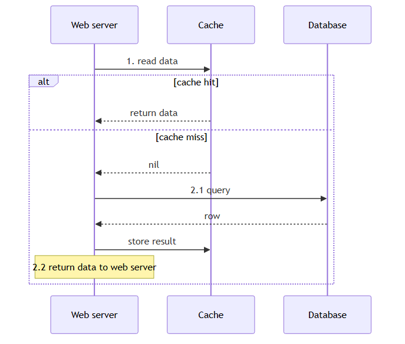
After receiving a request, a web server first checks if the cache has the available response. If it has, it sends data back to the client. If not, it queries the database, stores the response in cache, and sends it back to the client. This caching strategy is called a read-through cache. Other caching strategies are available depending on the data type, size, and access patterns. A previous study explains how different caching strategies work [6].
Interacting with cache servers is simple because most cache servers provide APIs for common programming languages. The following code snippet shows typical Memcached APIs:
SECONDS = 1
cache.set('myKey', 'hi there', 3600 * SECONDS)
cache.get('myKey')
Considerations for using cache¶
Here are a few considerations for using a cache system:
-
Decide when to use cache. Consider using cache when data is read frequently but modified infrequently. Since cached data is stored in volatile memory, a cache server is not ideal for persisting data. For instance, if a cache server restarts, all the data in memory is lost. Thus, important data should be saved in persistent data stores.
-
Expiration policy. It is a good practice to implement an expiration policy. Once cached data is expired, it is removed from the cache. When there is no expiration policy, cached data will be stored in the memory permanently. It is advisable not to make the expiration date too short as this will cause the system to reload data from the database too frequently. Meanwhile, it is advisable not to make the expiration date too long as the data can become stale.
-
Consistency: This involves keeping the data store and the cache in sync. Inconsistency can happen because data-modifying operations on the data store and cache are not in a single transaction. When scaling across multiple regions, maintaining consistency between the data store and cache is challenging. For further details, refer to the paper titled “Scaling Memcache at Facebook” published by Facebook [7].
-
Mitigating failures: A single cache server represents a potential single point of failure (SPOF), defined in Wikipedia as follows: “A single point of failure (SPOF) is a part of a system that, if it fails, will stop the entire system from working” [8]. As a result, multiple cache servers across different data centers are recommended to avoid SPOF. Another recommended approach is to overprovision the required memory by certain percentages. This provides a buffer as the memory usage increases.
Figure 8 — Single point of failure (SPOF)¶
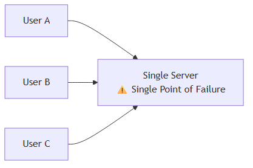
- Eviction Policy: Once the cache is full, any requests to add items to the cache might cause existing items to be removed. This is called cache eviction. Least-recently-used (LRU) is the most popular cache eviction policy. Other eviction policies, such as the Least Frequently Used (LFU) or First in First Out (FIFO), can be adopted to satisfy different use cases.
⭐ Amplification — caching patterns and stampedes¶
Caching patterns (the original mentions read-through; here are all the common ones):
Pattern Read path Write path Best for Cache-aside (lazy loading) App checks cache → on miss, queries DB and populates cache App writes DB and invalidates cache General purpose; most flexible Read-through App asks cache; cache fetches from DB on miss Same as cache-aside Hides DB calls from app Write-through Read from cache Write to cache, which writes to DB synchronously Strong consistency between cache and DB Write-behind (write-back) Read from cache Write to cache; DB updated async Very write-heavy Refresh-ahead Read from cache Cache proactively refreshes hot keys before expiry Predictable hot keys Eviction policies in detail:
Policy Evicts Best when LRU Least Recently Used Item not touched longest General purpose, default everywhere LFU Least Frequently Used Item with fewest hits Strong access skew (popular items stay hot) FIFO First In First Out Oldest by insertion Time-windowed data TTL-based Anything past its expiry Time-sensitive data Random Random item When you want simplicity and skew is low ⚠️ Cache stampede (a.k.a. dogpile / thundering herd): a hot key expires, thousands of concurrent requests all miss simultaneously and slam the DB. Mitigations: - Lock on miss — first miss acquires a lock, others wait. - Probabilistic early refresh — refresh hot keys before they expire. - Jittered TTL — randomize expirations so they don’t all hit at once. - Stale-while-revalidate — serve stale data while refreshing in the background.
Content delivery network (CDN)¶
A CDN is a network of geographically dispersed servers used to deliver static content. CDN servers cache static content like images, videos, CSS, JavaScript files, etc.
Dynamic content caching is a relatively new concept and beyond the scope of this course. It enables the caching of HTML pages that are based on request path, query strings, cookies, and request headers. Refer to the article mentioned in reference material [9] for more about this. This course focuses on how to use CDN to cache static content.
Here is how CDN works at the high-level: when a user visits a website, a CDN server closest to the user will deliver static content. Intuitively, the further users are from CDN servers, the slower the website loads. For example, if CDN servers are in San Francisco, users in Los Angeles will get content faster than users in Europe. Figure 9 is a great example that shows how CDN improves load time.
Figure 9 — CDN improves load time¶
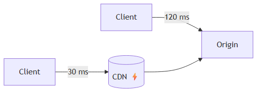
Figure 10 demonstrates the CDN workflow.
Figure 10 — CDN workflow¶
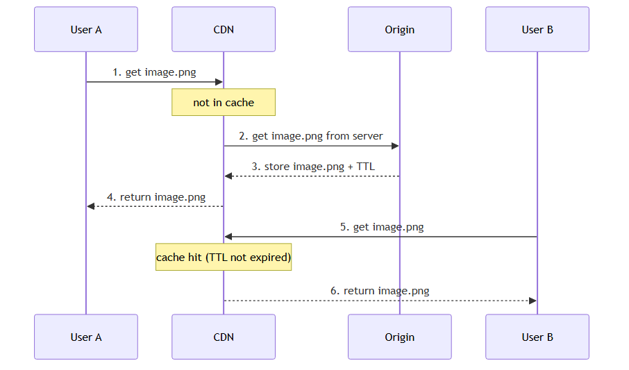
- User A tries to get
image.pngby using an image URL. The URL’s domain is provided by the CDN provider. The following two image URLs are samples used to demonstrate what image URLs look like on Amazon and Akamai CDNs: https://mysite.cloudfront.net/logo.jpg-
https://mysite.akamai.com/image-manager/img/logo.jpg -
If the CDN server does not have
image.pngin the cache, the CDN server requests the file from the origin, which can be a web server or online storage like Amazon S3. -
The origin returns
image.pngto the CDN server, which includes optional HTTP header Time-to-Live (TTL) which describes how long the image is cached. -
The CDN caches the image and returns it to User A. The image remains cached in the CDN until the TTL expires.
-
User B sends a request to get the same image.
-
The image is returned from the cache as long as the TTL has not expired.
Considerations of using a CDN¶
-
Cost: CDNs are run by third-party providers, and you are charged for data transfers in and out of the CDN. Caching infrequently used assets provides no significant benefits so you should consider moving them out of the CDN.
-
Setting an appropriate cache expiry: For time-sensitive content, setting a cache expiry time is important. The cache expiry time should neither be too long nor too short. If it is too long, the content might no longer be fresh. If it is too short, it can cause repeat reloading of content from origin servers to the CDN.
-
CDN fallback: You should consider how your website/application copes with CDN failure. If there is a temporary CDN outage, clients should be able to detect the problem and request resources from the origin.
-
Invalidating files: You can remove a file from the CDN before it expires by performing one of the following operations:
- Invalidate the CDN object using APIs provided by CDN vendors.
- Use object versioning to serve a different version of the object. To version an object, you can add a parameter to the URL, such as a version number. For example, version number 2 is added to the query string:
image.png?v=2.
Figure 11 shows the design after the CDN and cache are added.
Figure 11 — Architecture with CDN + cache¶
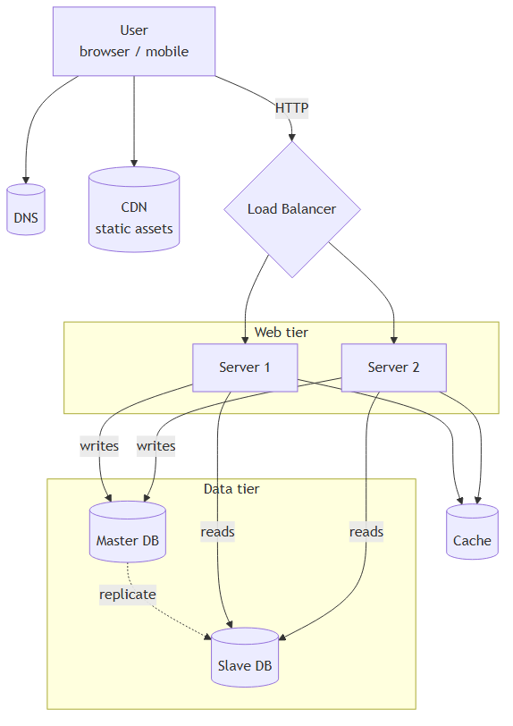
-
Static assets (JS, CSS, images, etc.) are no longer served by web servers. They are fetched from the CDN for better performance.
-
The database load is lightened by caching data.
⭐ Amplification — popular CDNs and how they pick the edge¶
Major CDN providers: Cloudflare, AWS CloudFront, Akamai, Fastly, Google Cloud CDN, Azure CDN, Bunny.net.
Edge selection: CDNs use anycast routing — the same IP is announced from many locations, and BGP routes the user to the topologically nearest one. So a user in Buenos Aires hits a São Paulo edge automatically; a user in Madrid hits a Madrid edge.
Cache headers that control CDN behavior:
Cache-Control: public, max-age=31536000, immutable # 1 year, never changes Cache-Control: public, max-age=300, s-maxage=3600 # 5 min for browser, 1 hr for CDN Cache-Control: private, no-store # never cacheVersioning trick (best practice): build tools (Webpack, Vite) hash filenames:
app.a1b2c3.js. The hash changes only when the content changes — so you can set max-age to one year and never worry about stale assets again.
Stateless web tier¶
Now it is time to consider scaling the web tier horizontally. For this, we need to move state (for instance user session data) out of the web tier. A good practice is to store session data in the persistent storage such as relational database or NoSQL. Each web server in the cluster can access state data from databases. This is called stateless web tier.
Stateful architecture¶
A stateful server and stateless server has some key differences. A stateful server remembers client data (state) from one request to the next. A stateless server keeps no state information.
Figure 12 shows an example of a stateful architecture.
Figure 12 — Stateful architecture (sticky sessions required)¶
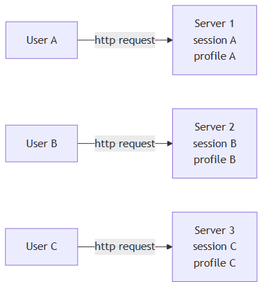
In Figure 12, user A’s session data and profile image are stored in Server 1. To authenticate User A, HTTP requests must be routed to Server 1. If a request is sent to other servers like Server 2, authentication would fail because Server 2 does not contain User A’s session data. Similarly, all HTTP requests from User B must be routed to Server 2; all requests from User C must be sent to Server 3.
The issue is that every request from the same client must be routed to the same server. This can be done with sticky sessions in most load balancers [10]; however, this adds the overhead. Adding or removing servers is much more difficult with this approach. It is also challenging to handle server failures.
Stateless architecture¶
Figure 13 shows the stateless architecture.
Figure 13 — Stateless architecture (any server can handle any user)¶
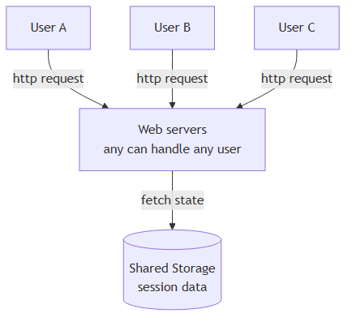
In this stateless architecture, HTTP requests from users can be sent to any web servers, which fetch state data from a shared data store. State data is stored in a shared data store and kept out of web servers. A stateless system is simpler, more robust, and scalable.
Figure 14 shows the updated design with a stateless web tier.
Figure 14 — Stateless web tier with autoscaling¶
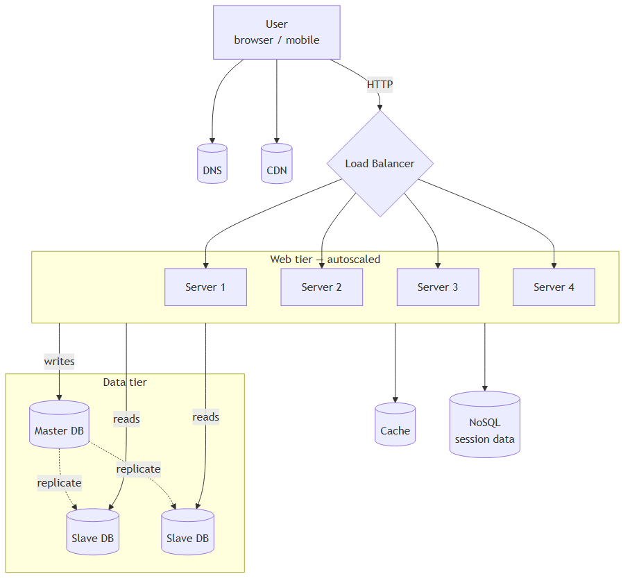
In Figure 14, we move the session data out of the web tier and store them in the persistent data store. The shared data store could be a relational database, Memcached/Redis, NoSQL, etc. The NoSQL data store is chosen as it is easy to scale. Autoscaling means adding or removing web servers automatically based on the traffic load. After the state data is removed out of web servers, auto-scaling of the web tier is easily achieved by adding or removing servers based on traffic load.
Your website grows rapidly and attracts a significant number of users internationally. To improve availability and provide a better user experience across wider geographical areas, supporting multiple data centers is crucial.
⭐ Amplification — where state hides¶
Removing state isn’t only about session data. State sneaks back in via:
Hidden state Symptom Fix In-memory rate limiters Limits reset when traffic moves servers Move counters to Redis Local file uploads Files exist on one box only Use S3 / blob storage In-process caches Inconsistency between servers Use distributed cache WebSocket connections Pinned to one server by nature Use sticky load balancing or pub/sub backplane (Redis) Background jobs in app process Lost when server scales down Move to dedicated worker tier + queue JWT vs server-side sessions: a popular alternative to a shared session store is to put the session inside the token itself (signed JWT). Pro: no DB lookup per request. Con: revocation is hard, tokens get bigger.
Data centers¶
Figure 15 shows an example setup with two data centers. In normal operation, users are geoDNS-routed, also known as geo-routed, to the closest data center, with a split traffic of x% in US-East and (100 – x)% in US-West. geoDNS is a DNS service that allows domain names to be resolved to IP addresses based on the location of a user.
Figure 15 — Multi-data-center, normal operation¶
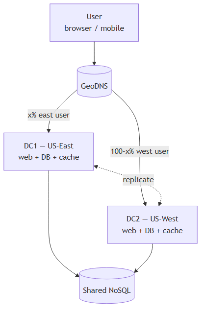
In the event of any significant data center outage, we direct all traffic to a healthy data center. In Figure 16, data center 2 (US-West) is offline, and 100% of the traffic is routed to data center 1 (US-East).
Figure 16 — Failover: DC2 offline, 100% to DC1¶
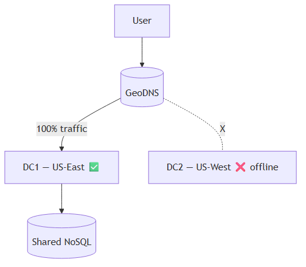
Several technical challenges must be resolved to achieve multi-data center setup:
-
Traffic redirection: Effective tools are needed to direct traffic to the correct data center. GeoDNS can be used to direct traffic to the nearest data center depending on where a user is located.
-
Data synchronization: Users from different regions could use different local databases or caches. In failover cases, traffic might be routed to a data center where data is unavailable. A common strategy is to replicate data across multiple data centers. A previous study shows how Netflix implements asynchronous multi-data center replication [11].
-
Test and deployment: With multi-data center setup, it is important to test your website/application at different locations. Automated deployment tools are vital to keep services consistent through all the data centers [11].
To further scale our system, we need to decouple different components of the system so they can be scaled independently. Messaging queue is a key strategy employed by many real-world distributed systems to solve this problem.
⭐ Amplification — active-active vs active-passive¶
Mode How Pro Con Active-passive One DC serves traffic, other is hot standby Simple consistency model Wasted capacity; failover can take minutes Active-active Both DCs serve traffic Full capacity utilized; instant failover Conflict resolution required for concurrent writes The CAP theorem matters here: in a network partition between DCs, you must choose: - CP (Consistency + Partition tolerance) — refuse writes until partition heals (e.g., Spanner, etcd). - AP (Availability + Partition tolerance) — accept writes on both sides, reconcile later (e.g., DynamoDB, Cassandra).
Latency reality check: cross-region replication adds 50–200ms of round-trip latency. You can’t make a transaction “just work” across continents synchronously without paying this cost.
Message queue¶
A message queue is a durable component, stored in memory, that supports asynchronous communication. It serves as a buffer and distributes asynchronous requests. The basic architecture of a message queue is simple. Input services, called producers/publishers, create messages, and publish them to a message queue. Other services or servers, called consumers/subscribers, connect to the queue, and perform actions defined by the messages. The model is shown in Figure 17.
Figure 17 — Basic message queue model¶
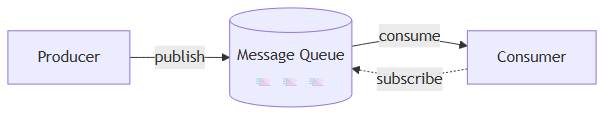
Decoupling makes the message queue a preferred architecture for building a scalable and reliable application. With the message queue, the producer can post a message to the queue when the consumer is unavailable to process it. The consumer can read messages from the queue even when the producer is unavailable.
Consider the following use case: your application supports photo customization, including cropping, sharpening, blurring, etc. Those customization tasks take time to complete. In Figure 18, web servers publish photo processing jobs to the message queue. Photo processing workers pick up jobs from the message queue and asynchronously perform photo customization tasks. The producer and the consumer can be scaled independently. When the size of the queue becomes large, more workers are added to reduce the processing time. However, if the queue is empty most of the time, the number of workers can be reduced.
Figure 18 — Photo processing with a message queue¶
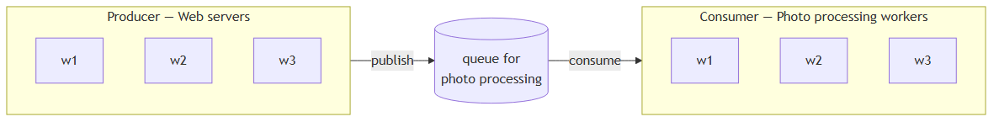
⭐ Amplification — message queue / streaming options¶
Common products:
Product Type Sweet spot RabbitMQ Traditional MQ Task queues, RPC, complex routing AWS SQS Managed MQ Simple, durable, AWS-native Apache Kafka Log-based stream High-throughput event streaming, replayable history Google Pub/Sub Managed pub/sub GCP-native, auto-scaling Azure Service Bus Managed MQ Enterprise / Azure-native Redis Streams Lightweight stream When you already have Redis Delivery guarantees to know: - At-most-once — fire and forget; messages can be lost. - At-least-once — most common; consumers must be idempotent (handling the same message twice is safe). - Exactly-once — possible only with extra coordination (Kafka transactions, dedup keys).
⚠️ Dead-letter queues (DLQ): when a message fails repeatedly, send it to a DLQ instead of retrying forever — otherwise one bad message can block the queue.
Logging, metrics, automation¶
When working with a small website that runs on a few servers, logging, metrics, and automation support are good practices but not a necessity. However, now that your site has grown to serve a large business, investing in those tools is essential.
-
Logging: Monitoring error logs is important because it helps to identify errors and problems in the system. You can monitor error logs at per server level or use tools to aggregate them to a centralized service for easy search and viewing.
-
Metrics: Collecting different types of metrics help us to gain business insights and understand the health status of the system. Some of the following metrics are useful:
- Host level metrics: CPU, Memory, disk I/O, etc.
- Aggregated level metrics: for example, the performance of the entire database tier, cache tier, etc.
-
Key business metrics: daily active users, retention, revenue, etc.
-
Automation: When a system gets big and complex, we need to build or leverage automation tools to improve productivity. Continuous integration is a good practice, in which each code check-in is verified through automation, allowing teams to detect problems early. Besides, automating your build, test, deploy process, etc. could improve developer productivity significantly.
Adding message queues and different tools¶
Figure 19 shows the updated design. Due to the space constraint, only one data center is shown in the figure.
-
The design includes a message queue, which helps to make the system more loosely coupled and failure resilient.
-
Logging, monitoring, metrics, and automation tools are included.
Figure 19 — Architecture with queue + logging/metrics/automation¶
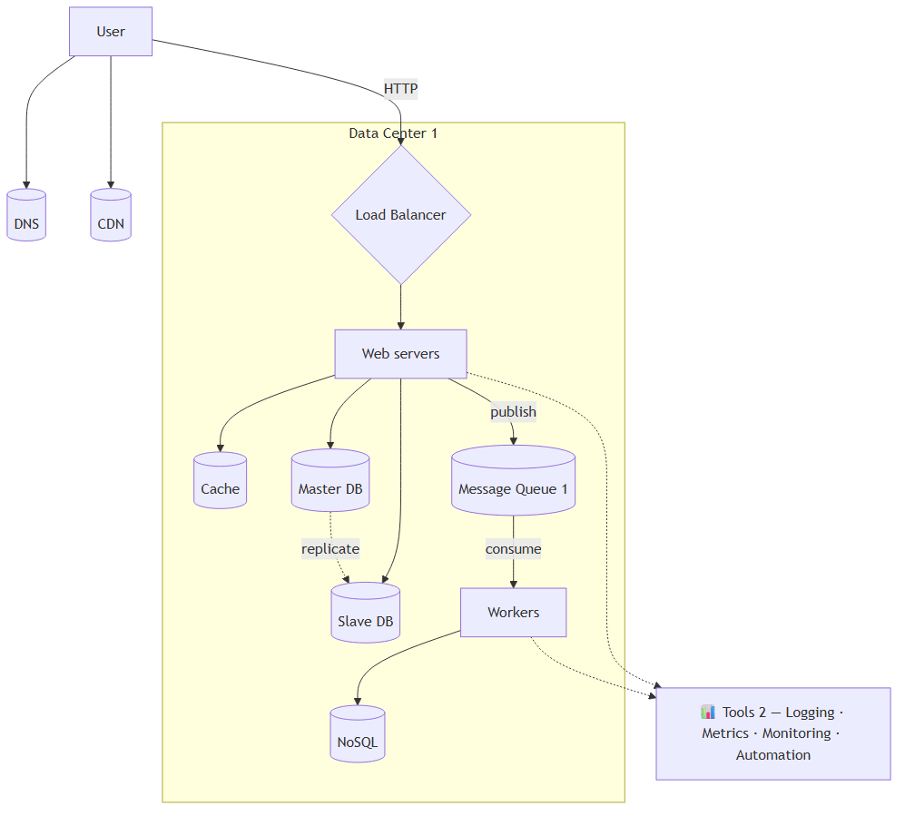
As the data grows every day, your database gets more overloaded. It is time to scale the data tier.
⭐ Amplification — observability stack¶
The original mentions logging and metrics; modern observability adds traces as the third pillar:
Pillar What it answers Tools Logs “What happened?” ELK (Elasticsearch + Kibana), Splunk, Datadog Logs, Loki, CloudWatch Metrics “How much / how often?” Prometheus + Grafana, Datadog, New Relic, CloudWatch Metrics Traces “Where did time go in this request?” Jaeger, Zipkin, Honeycomb, Datadog APM, OpenTelemetry The four golden signals (Google SRE) — track these for every service: 1. Latency — how long requests take (split success vs failure) 2. Traffic — how many requests per second 3. Errors — rate of failed requests 4. Saturation — how full the service is (CPU, queue depth, memory)
Automation pyramid: - CI (Continuous Integration) — every commit runs tests automatically - CD (Continuous Delivery / Deployment) — every passing build deploys to staging or prod - IaC (Infrastructure as Code) — Terraform, Pulumi, CloudFormation describe infra in version control - GitOps — Git is the source of truth for both code and infrastructure state
Database scaling¶
There are two broad approaches for database scaling: vertical scaling and horizontal scaling.
Vertical scaling¶
Vertical scaling, also known as scaling up, is the scaling by adding more power (CPU, RAM, DISK, etc.) to an existing machine. There are some powerful database servers. According to Amazon Relational Database Service (RDS) [12], you can get a database server with 24 TB of RAM. This kind of powerful database server could store and handle lots of data. For example, stackoverflow.com in 2013 had over 10 million monthly unique visitors, but it only had 1 master database [13]. However, vertical scaling comes with some serious drawbacks:
- You can add more CPU, RAM, etc. to your database server, but there are hardware limits. If you have a large user base, a single server is not enough.
- Greater risk of single point of failures.
- The overall cost of vertical scaling is high. Powerful servers are much more expensive.
Horizontal scaling¶
Horizontal scaling, also known as sharding, is the practice of adding more servers. Figure 20 compares vertical scaling with horizontal scaling.
Figure 20 — Vertical vs horizontal scaling¶
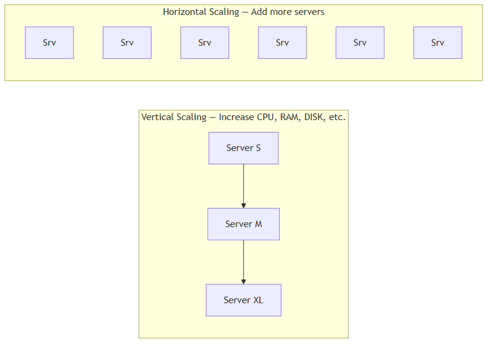
Sharding separates large databases into smaller, more easily managed parts called shards. Each shard shares the same schema, though the actual data on each shard is unique to the shard.
Figure 21 shows an example of sharded databases. User data is allocated to a database server based on user IDs. Anytime you access data, a hash function is used to find the corresponding shard. In our example, user_id % 4 is used as the hash function. If the result equals to 0, shard 0 is used to store and fetch data. If the result equals to 1, shard 1 is used. The same logic applies to other shards.
Figure 21 — Sharding by user_id % 4¶
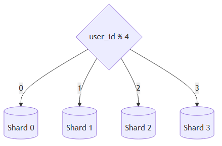
Figure 22 shows the user table in sharded databases.
Figure 22 — Users table across shards¶
| Shard 0 (user_id) | Shard 1 (user_id) | Shard 2 (user_id) | Shard 3 (user_id) |
|---|---|---|---|
| 0 | 1 | 2 | 3 |
| 4 | 5 | 6 | 7 |
| 8 | 9 | 10 | 11 |
| … | … | … | … |
The most important factor to consider when implementing a sharding strategy is the choice of the sharding key. Sharding key (known as a partition key) consists of one or more columns that determine how data is distributed. As shown in Figure 22, user_id is the sharding key. A sharding key allows you to retrieve and modify data efficiently by routing database queries to the correct database. When choosing a sharding key, one of the most important criteria is to choose a key that can evenly distributed data.
Sharding is a great technique to scale the database but it is far from a perfect solution. It introduces complexities and new challenges to the system:
-
Resharding data: Resharding data is needed when 1) a single shard could no longer hold more data due to rapid growth. 2) Certain shards might experience shard exhaustion faster than others due to uneven data distribution. When shard exhaustion happens, it requires updating the sharding function and moving data around. Consistent hashing is a commonly used technique to solve this problem.
-
Celebrity problem: This is also called a hotspot key problem. Excessive access to a specific shard could cause server overload. Imagine data for Katy Perry, Justin Bieber, and Lady Gaga all end up on the same shard. For social applications, that shard will be overwhelmed with read operations. To solve this problem, we may need to allocate a shard for each celebrity. Each shard might even require further partition.
-
Join and de-normalization: Once a database has been sharded across multiple servers, it is hard to perform join operations across database shards. A common workaround is to de-normalize the database so that queries can be performed in a single table.
In Figure 23, we shard databases to support rapidly increasing data traffic. At the same time, some of the non-relational functionalities are moved to a NoSQL data store to reduce the database load. Here is an article that covers many use cases of NoSQL [14].
Figure 23 — Final architecture with sharded DB + NoSQL¶
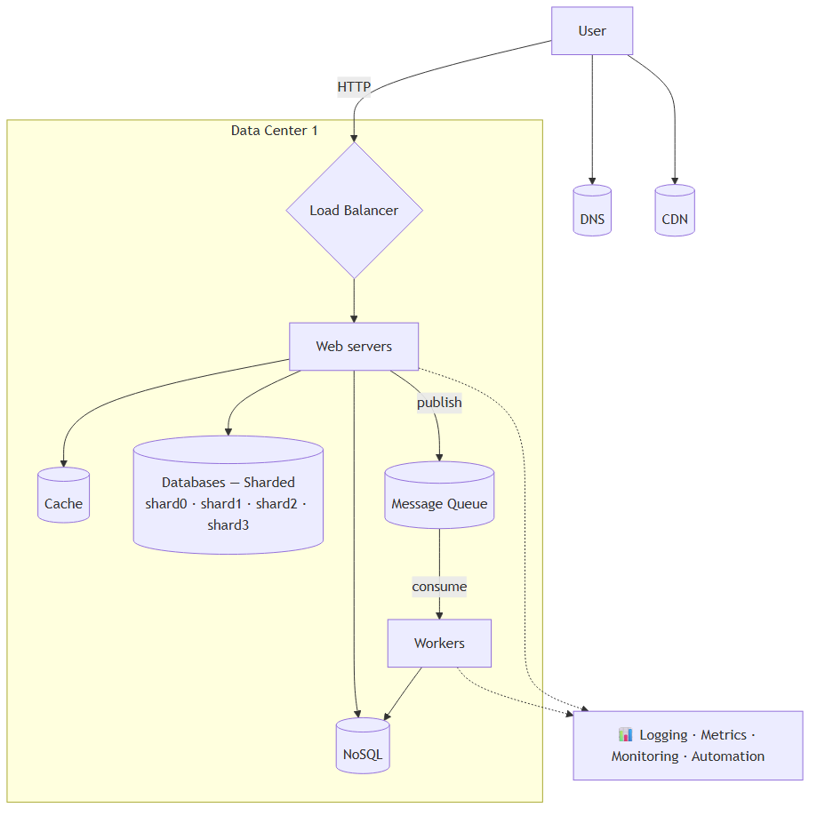
⭐ Amplification — sharding strategies in detail¶
Sharding strategies:
Strategy How keys map to shards Pro Con Range-based Shard by ranges of the key (e.g. user_id 0–999 → shard 0) Range queries are fast Hot shards if key not uniform Hash-based hash(key) % NEven distribution Range queries become scatter-gather Consistent hashing Hash key + servers onto a ring Adding/removing shards moves minimal data More complex Directory-based Lookup table maps key → shard Maximum flexibility Lookup table is itself a SPOF Geographic Shard by region Data locality, compliance Cross-region queries hard Consistent hashing explained briefly: - Place servers and keys on a circular hash ring. - Each key belongs to the next server clockwise. - When you add a server, only ~1/N of keys move (vs everything moving with
% N). - Used by Cassandra, DynamoDB, memcached clients, CDNs.Hot key mitigation strategies (beyond “give celebrities their own shard”): - Add a suffix to spread writes: instead of
user:ladygaga→ useuser:ladygaga:0,user:ladygaga:1, etc. - Add a read-through cache in front of the hot shard. - Replicate hot keys across all shards (read from any, write to all).
Millions of users and beyond¶
Scaling a system is an iterative process. Iterating on what we have learned in this chapter could get us far. More fine-tuning and new strategies are needed to scale beyond millions of users. For example, you might need to optimize your system and decouple the system to even smaller services. All the techniques learned in this chapter should provide a good foundation to tackle new challenges. To conclude this chapter, we provide a summary of how we scale our system to support millions of users:
- Keep web tier stateless
- Build redundancy at every tier
- Cache data as much as you can
- Support multiple data centers
- Host static assets in CDN
- Scale your data tier by sharding
- Split tiers into individual services
- Monitor your system and use automation tools
⭐ Amplification — Pitfalls and decision tree (added)¶
Common pitfalls¶
- ❌ Premature scaling. Adding sharding/queues/microservices before you have the problem creates complexity tax with no benefit.
- ❌ Stateful sessions sneak back in. Caches keyed by hostname, in-memory rate limiters, file uploads to local disk — all break stateless assumptions.
- ❌ Master promotion is not “instant failover.” Slaves lag; promoting can lose recent writes. Plan recovery scripts.
- ❌ Cache stampede. When a hot key expires, all requests miss simultaneously and pile onto the DB. Mitigations: lock-on-miss, probabilistic early refresh, jittered TTLs.
- ❌ Bad sharding key = uneven shards forever. Resharding is painful — pick carefully (consistent hashing helps).
- ❌ Ignoring the celebrity problem. A single hot user/tenant can take down a shard.
- ❌ No CDN invalidation strategy. “Why is the old logo still showing?” → versioned URLs save you.
- ❌ No rate limiting. A single misbehaving client (or bot) can saturate your tier. Add limits at the LB or API gateway.
- ❌ No circuit breakers. When a downstream service is slow, your service piles up requests on it instead of failing fast.
Decision tree — what to do next?¶
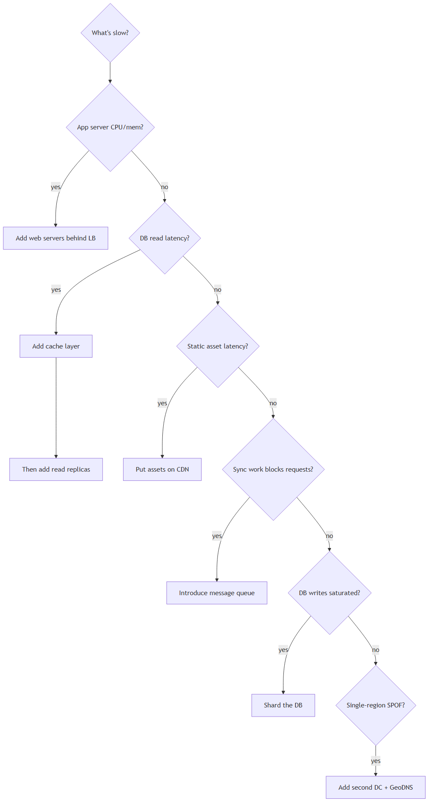
Quick-reference: which step solves which problem?¶
| Problem | Step that solves it |
|---|---|
| One server at capacity | LB + horizontal web tier |
| DB is a SPOF | Master/slave replication |
| Reads slow / DB hot | Read replicas + cache |
| Static files are slow internationally | CDN |
| Can’t autoscale web tier | Stateless web tier |
| One region is a SPOF | Multi-DC + GeoDNS |
| Slow sync work blocks requests | Message queue + workers |
| DB writes saturated | Shard the DB |
| Can’t see what’s broken | Logging + metrics + tracing |
📚 References¶
- [1] Hypertext Transfer Protocol — https://en.wikipedia.org/wiki/Hypertext_Transfer_Protocol
- [2] Should you go beyond relational databases? — https://blog.teamtreehouse.com/should-you-go-beyond-relational-databases
- [3] Database replication — https://en.wikipedia.org/wiki/Replication_(computing)#Database_replication
- [4] Multi-master replication — https://en.wikipedia.org/wiki/Multi-master_replication
- [5] Circular replication — referenced in original
- [6] Caching strategies and best practices — https://www.allthingsdistributed.com/files/amazon-dynamo-sosp2007.pdf
- [7] Scaling Memcache at Facebook — https://www.usenix.org/system/files/conference/nsdi13/nsdi13-final170_update.pdf
- [8] Single point of failure — https://en.wikipedia.org/wiki/Single_point_of_failure
- [9] Dynamic content caching — referenced in original
- [10] Sticky sessions — https://en.wikipedia.org/wiki/Load_balancing_(computing)#Persistence
- [11] Active-Active for Multi-Regional Resiliency (Netflix) — https://netflixtechblog.com/active-active-for-multi-regional-resiliency-c47719f6685b
- [12] Amazon RDS — https://aws.amazon.com/rds/
- [13] Stack Overflow architecture (2013) — https://nickcraver.com/blog/2016/02/17/stack-overflow-the-architecture-2016-edition/
- [14] Use cases of NoSQL — https://www.thegeekstuff.com/2014/01/sql-vs-nosql-db/
- Original chapter source: System Design Interview – An Insider’s Guide (Alex Xu), Chapter 1.